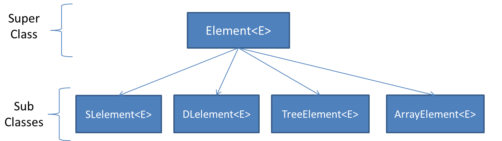
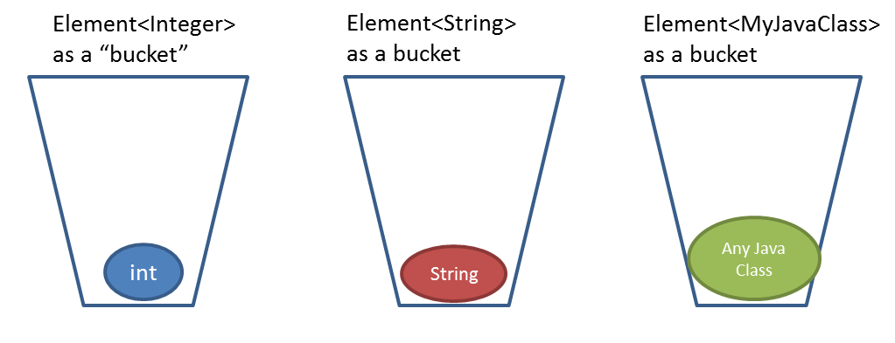
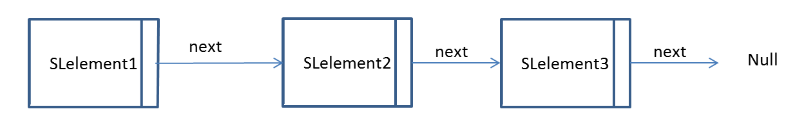
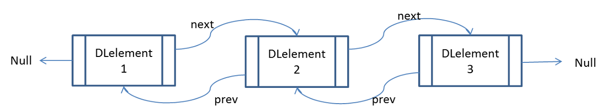
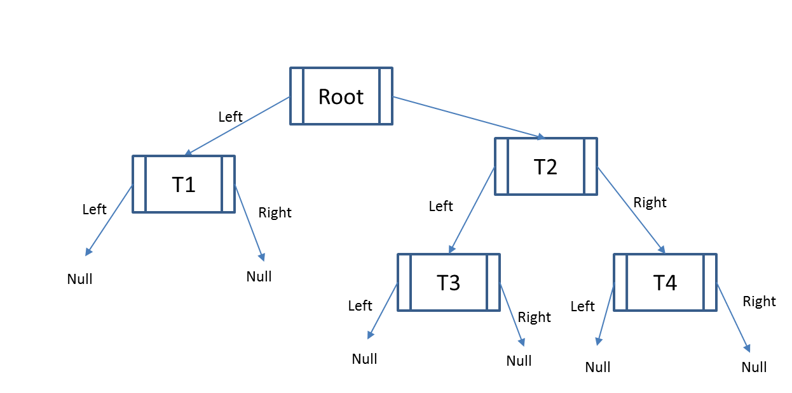
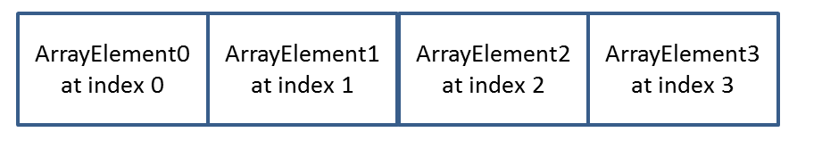
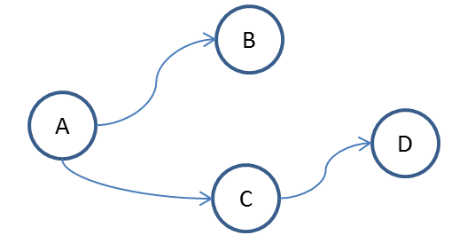

Element<E> is the superclass of SLelement<E>,
DLelement<E>, TreeElement<E>, and ArrayElement<E>.

You will normally
be using these classes to build data structures. Since they are
subclasses of Element<E>, they inherit a common set of methods
and instance variables, so to a certain extent they will share a
common set of behavior. However, since they are all different
classes, they will have methods and instance variables that are
unique to their particular class.
<E> is the Java generic parameter. It represents any class, so
you can have an SLelement<String> or an
SLelement<Integer> or any other class.
You
may be wondering, if <E> can be any class, then how does
Element know how to behave since a Boolean does not have the same
methods available as a String?
Since we didn’t
put any restrictions on <E> inside the Element class signature,
we can only call methods of <E> that are common to ALL java
objects. We will not be allowed to call a method on E that is
particular to any one class.
In this way, we can
allow the Element<E> class to function as a container. The
container doesn't care what it's holding, and whatever the container
is holding doesn't influence the behavior of the container. 
SLelement<E> stands for Singly Linked Element and is a type of
container that only has one pointer which points to another
SLelement<E>. So an SLelement<E> "knows" who it's
pointing at but it does not know who pointed at it.

In this case SLelement1 points to SLelement2.
Calling getNext() on SLelement1 will return SLelement2, and calling
getNext() on SLelement2 will return SLelement3.
In this example, SLelement3 is not pointing to another SLelement so
calling getNext() on SLelement3 will return Null. This is desirable
since you will know that you’ve reached the end of all of the linked
SLelements when one of them returns Null.
Notice
that there is no getPrev(). SLelement2 has no idea what element came
before it. So, you CANNOT go backwards.
DLelement<E> stands for Doubly Linked Element, and is a type of
container that has two pointers that point to other
DLelement<E>. So a DLelement<E> “knows” who it’s pointing
at, AND it knows who pointed at it.

TreeElement<E> is another type of container that has two
pointers that point to two child TreeElement<E>. By convention,
these two pointers are called "left" and "right".

By convention, the “top” of the tree is called the root.
Root has two pointers, so calling Root.getLeft() will return the
TreeElement T1 and calling Root.getRight() will return the
TreeElement T2.
Note that there is no pointer
from T1 or any other element back to its root.
DLelement<E> also has two pointers, but one points to the
previous element. TreeElement<E> does not point to the previous
element, but points at two different children.
DLelement<E> has a next and previous element, by convention, a
TreeElement<E> has a right and left element.
Generally a TreeElement<E> will be used in a recursive data
structure and that data structure that will specify a particular
relationship that all of the right elements have relative to it’s
root and a different relationship that all left elements have
relative to it’s root (a binary search tree, for example).
ArrayElement<E> is a building block for an array of elements.
It has NO POINTERS to other objects. Unlike all of the
other elements, it is designed to enable direct access to a
particular element at a particular index.

In this case once you’ve made an array of ArrayElements, you get
access to the element by using the index, just like a normal Java
array.
For example myArray[2] would return
ArrayElement2
In Bridges, graphs use an adjacency list representation and are built
by using the Java HashMap<String, SLelement<E>>.
In this case, the "key" is the identifier of the vertex,
and the "value" is a set of linked SLelements representing the edges
of the graph.
In most graph representations, the
key is the vertex, and the value assigned to it is the list of
vertices that are connected to it
Bridges is
slightly different because the linked list mapped to the vertex
starts with the vertex itself, and the subsequent links are the
edges.

For example, if we have vertices Vertex_A, Vertex_B, Vertex_C, and
Vertex_D with Vertex_A connected to both Vertex_B and Vertex_C, and
Vertex_C connected to Vertex_D, the classical representation would
look as follows:
Vertex_A: Vertex_A-->EdgeToB-->EdgeToC
Vertex_C:
Vertex_C-->EdgeToD
At a minimum, Bridges needs four things to provide a visualization.
If your program has made changes to your data structure and you would
like to see the new visualization, call visualize() from your Bridges
object when you want to see the new visualization.
Generally, this will be dictated by the project that you are working
on.
If the project only requires the
visualization of the finished structure, then it makes sense to only
call visualize() once, after you’ve linked together your elements.
If the project requires showing some intermediate steps,
you can call visualize() multiple times and it will increment your
assignment number by .01, and provide you a new URL in the console
window.
All Elements have a setLabel(String s) method. Setting this will
change the text that appears on screen.
For
example, if sle is an SLelement:
Each element has a getVisualizer() method. This will return an
ElementVisualizer object.
The ElementVisualizer
is the object that controls how the visualization looks.
The ElementVisualizer can be changed using the setColor(),
setOpacity(), setShape(), and setSize() methods.
The easiest way to change the ElementVisualizer is to chain together
methods. For example if sle is an SLelement:
You can keep different projects separated by changing the assignment
number.
Normally, you will set the assignment
number at the beginning of your project when you construct the
Bridges object.